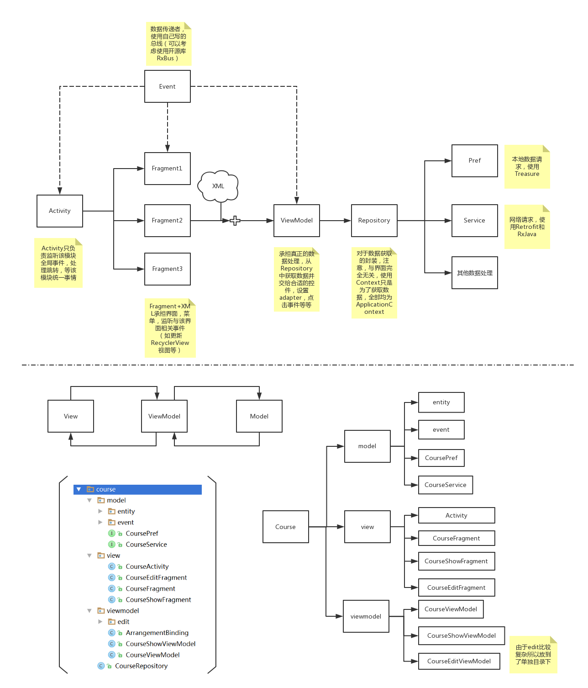
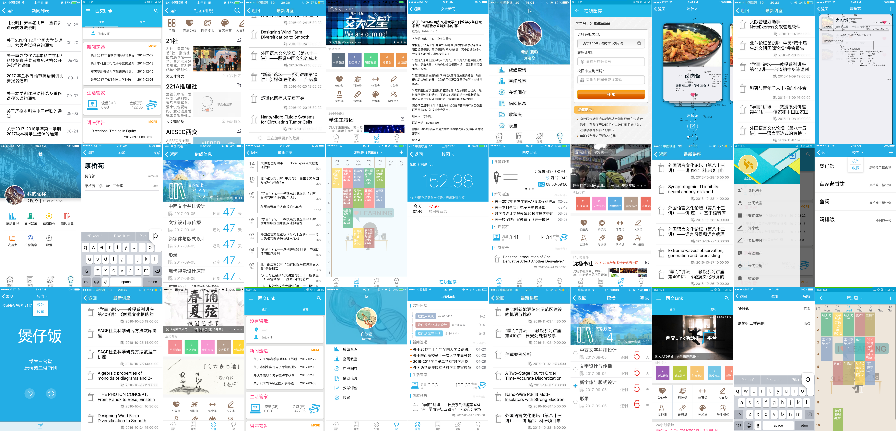

Mobile Application Team: XJ-LINK Development and Maintenance
During 2016-2018 I joined in the team “Linker Studio” (零客工作室), which was a technology-driven student club founded in 2015 and hosted under the Data and Information Center at XJTU. As a team we focused on our self-developed campus mobile application “XJ-LINK” (西交Link), which served as a convenient integrated tool for students checking schedules, exam grades, library borrowings, campus news and guest lecture information, topping up their student card balances, performing teaching assessment, registering for club activities, etc.
The team was committed to building practical and interesting products for XJTUer with low-latency distributed architectures, better mobile internet services and windows to stay more connected with each other.

I was involved in developing, maintaining and updating multiple modules, including displaying web feeds of campus news, guest lectures, job fairs, available lecture halls and daily menus of the canteens, and extending loan periods of books from libraries. I was also in charge of designing posters, flyers and the showcase images in AppStore for promoting the new versions of the app and their launch events, and the student club itself.


By 2018, the application XJ-LINK has 12,407 users registered, covering more than 9,200 (60%) undergraduate students, with an average of 2,000+ daily active users, 4,500+ weekly active users and a peak of 7,000 monthly active users. We also managed to collaborate with all 125 student clubs in XJTU.
The team project XJ-LINK: Design & Implementation of Digital Campus Information Systems Basing on Mobile Internet won a silver award in the 2018 Entrepreneurship Practice Competition of XJTU.